화면 설계 — 준비 교안
능력단위 화면 설계 (2001020224_23v6) / 5수준 · 평가방법 포트폴리오 (100점)
0. 제출물의 구성과 배점
제출물은 세 가지입니다. 배점을 시간 배분의 기준으로 삼습니다.
| 과제 | 만들어야 할 것 | 형식 | 배점 | 난이도 |
|---|---|---|---|---|
| 1 | 유스케이스 다이어그램 + 유스케이스 명세서 | 슬라이드 또는 문서 | 30 | 중 |
| 2 | 스타일가이드 (구동환경 · 로고 · 폰트 · 색상 · 레이아웃 · 구성요소) | 슬라이드 또는 문서 | 30 | 하 |
| 3 | 프로토타입 (화면 이동과 효과 정리) | Figma + 화면 캡처 | 40 | 상 |
포털의 제출 칸은 파일 하나와 링크 하나뿐입니다. 세 가지를 한 파일로 합쳐서 내고 Figma 링크를 따로 냅니다.
1. 화면 설계의 범위
화면 설계는 화면을 보기 좋게 꾸미는 일로 이해되기 쉬우나, 이 과목이 다루는 범위는 그보다 넓습니다. 사용자가 머릿속에 그려 놓은 그림과 개발자가 만든 물건 사이에는 늘 어긋남이 생기는데, 그 어긋남을 줄이는 일이 화면 설계입니다. 학습모듈은 이 어긋남을 두 종류로 나눠 부릅니다.
- 실행 차
- 하려는 일과 시스템이 할 수 있는 일이 어긋나는 경우입니다. 주문을 취소하려 해도 화면 어디에도 그 길이 없거나 너무 깊이 숨어 있는 상황이 여기에 해당합니다. 학습모듈은 이것을 줄이는 방법으로 세 가지를 듭니다. 사용자가 관심 있어 할 항목을 눈에 띄는 자리에 필요한 시점에 내놓는 것, 할 일의 순서를 잘게 나눠 분명하게 보여 주고 한 작업에 필요한 단계 수를 줄이는 것, 그리고 흐름이 화면만 봐도 보이도록 만들고 피드백과 취소를 제공하는 것입니다.
- 평가 차
- 결과가 나왔으나 그것이 의도한 일인지 알 수 없는 경우입니다. 버튼을 눌렀는데 아무 반응이 없어서 제대로 눌린 것인지 의심하게 되는 상황입니다. 이것도 세 가지로 줄입니다. 누른 즉시 무언가 바뀌어 보이게 하고, 바뀐 상태를 단순하고 이해하기 쉽게 알려 주고, 미리보기처럼 결과를 미리 짐작할 수 있게 해 주는 것입니다.
여섯 가지를 외울 필요는 없습니다. 다만 뒤에서 어떤 버튼을 왜 그 자리에 두었는지 설명해야 할 때, 이 가운데 하나를 근거로 들면 됩니다.
2. 산출물 작성 실습
네 단계로 나누었습니다. 앞 단계를 건너뛰면 레벨 3에서 진행이 어려워집니다. 각 단계 끝에 그 단계에서 완성되는 산출물과, 충족되는 채점 항목 번호를 적어 두었습니다.
1완성 산출물의 확인
포트폴리오 제출서 를 열고 위쪽의 예시 보기를 누릅니다. 모든 칸이 완성된 예시로 채워집니다. 처음부터 끝까지 한 번 확인하시기 바랍니다. 지금 내용이 이해되지 않아도 괜찮습니다. 평가일에 제출할 대상만 확인해 둡니다.
각 과제 끝에 있는 회색 상자는 왜 그렇게 썼는지에 대한 해설입니다. 예시를 켰을 때만 나옵니다.
2작업 도구의 준비
과제 3에서 쓰게 됩니다. 지금 계정을 만들고 빈 파일에 프레임을 하나 놓아 보시기 바랍니다. 사각형과 글자를 얹어 보고, 오른쪽에 Prototype 탭이 있다는 것만 확인하면 충분합니다.
도구를 익히는 시간과 설계하는 시간을 함께 쓰면 어느 쪽도 충분히 진행하기 어렵습니다. 도구 사용법은 미리 익혀 두시기 바랍니다.
3주제 선정
주제를 고를 때 두 가지를 봅니다. 목록과 상세, 입력 폼, 표, 외부 연동, 로그인 제약이 한 서비스 안에 모두 들어 있어야 하고, 팀원 누구나 아는 흐름이어야 합니다. 예약 서비스나 도서관, 배달 앱도 같은 구조로 풀립니다. 교안의 예시는 데일리마켓이라는 신선식품 쇼핑몰입니다.
4요구사항 정의
요구사항 정의의 개념
요구사항 정의는 이 서비스가 무엇을 해야 하는지를 문장으로 적어 두는 일입니다. 화면을 그리기 전에 합니다. 순서를 바꾸면 그림을 다 그려 놓고 뒤늦게 기능을 끼워 넣게 되고, 그때마다 화면이 다시 바뀝니다.
무엇부터 적어야 할지 판단하기 어려운 경우가 많습니다. 학습모듈은 요구사항을 네 가지로 나누어 도출하도록 안내합니다. 이 넷을 하나씩 확인해야 누락이 생기지 않습니다.
| 종류 | 무엇을 적는가 | 데일리마켓이라면 |
|---|---|---|
| 데이터 요구 | 서비스가 다루는 대상과 그 속성입니다. 인터페이스에 곧바로 영향을 주기 때문에 가장 먼저 확인합니다 | 상품은 상품명 · 가격 · 재고 · 원산지 · 이미지 주문은 주문번호 · 상품목록 · 금액 · 배송상태 |
| 기능 요구 | 목적을 이루려면 무엇을 실행해야 하는지를 동사형으로 적습니다. 빠짐없이 적는 것이 중요합니다 | 상품을 검색합니다 · 장바구니에 담습니다 · 수량을 바꿉니다 · 주문합니다 · 결제합니다 |
| 품질 | 기능은 아니지만 중요한 속성입니다. 측정할 수 있는 형태로 적어야 요구사항이 됩니다 | 목록은 2초 안에 뜹니다 · 모바일에서도 쓸 수 있습니다 |
| 제약사항 | 마감이나 비용, 규제처럼 우리가 정할 수 없는 조건입니다. 바꿀 수 있는지 없는지를 미리 확인해 둡니다 | 결제는 외부 PG 를 씁니다(변경 불가) 장바구니부터는 로그인해야 합니다(변경 불가) |
요구사항 도출 절차
학습모듈이 소개하는 절차는 다섯 단계입니다.
- 목표를 정합니다. 원래는 사용자를 만나 인터뷰해서 뽑습니다. 팀 안에서 정할 때는 누가 무엇 때문에 이 서비스를 쓰는지를 한 문장으로 합의하면 됩니다. 인터뷰를 하신다면 여러 명을 한꺼번에 부르지 말고 한 명씩, 한 시간을 넘기지 않는 것이 좋습니다.
- 네 가지 요소로 나눠서 뽑습니다. 위 표의 순서대로 데이터, 기능, 품질, 제약을 각각 확인합니다. 한꺼번에 도출하려고 하면 기능 위주로만 나오고 데이터와 제약이 누락됩니다.
- 정황 시나리오를 씁니다. 요구사항 정의에서 가장 기초가 되는 시나리오입니다. 모든 것이 잘 풀리는 상황을 가정하고, 사용자 입장에서 육하원칙에 따라 간결하게 씁니다. 같이 움직이는 기능은 한 시나리오로 묶습니다.
- 시나리오에 나온 동사를 한 줄씩 떼어 내 번호를 붙이고 표로 옮깁니다.
- 팀 밖의 사람이나 강사에게 한 번 보여 주고 검토를 받습니다.
여기서 동사만 뽑아내면 목록 보기, 상세 열기, 옵션과 수량 고르기, 담기, 합계 확인, 주문, 결제, 내역 확인이 됩니다. 이것이 그대로 다음 표가 됩니다.
| 번호 | 요구사항명 | 내용 | 우선순위 |
|---|---|---|---|
| SR-01 | 회원가입 | 비회원은 아이디와 비밀번호, 이메일로 가입합니다 | 높음 |
| SR-02 | 로그인 | 회원은 아이디와 비밀번호로 로그인합니다 | 높음 |
| SR-03 | 상품 목록 | 카테고리별로 상품을 목록으로 보여 줍니다 | 높음 |
| SR-04 | 상품 검색 | 상품명으로 검색합니다 | 중간 |
| SR-05 | 상품 상세 | 상품명과 가격, 원산지, 재고를 보여 주고 중량과 수량을 고르게 합니다 | 높음 |
| SR-06 | 장바구니 | 담은 상품의 수량을 바꾸거나 지웁니다. 합계 금액은 자동으로 다시 계산합니다 | 높음 |
| SR-07 | 주문 · 결제 | 배송지를 받아 결제를 요청합니다. 재고가 부족하면 진행하지 않습니다 | 높음 |
| SR-08 | 주문 내역 | 주문 목록과 배송 상태를 보여 줍니다. 배송 전이면 취소할 수 있습니다 | 중간 |
우선순위는 그것이 없으면 서비스가 성립하지 않는지를 기준으로 정했습니다. 검색과 주문 내역은 없어도 주문과 결제는 이루어지므로 중간으로 두었습니다.
요구사항 기술의 오류 유형
기능이라고만 쓰면 무엇을 만들어야 하는지가 정해지지 않습니다. 화면이 해야 할 일을 동사로 적으셔야 합니다.
품질에 대한 요구는 측정할 수 있어야 요구사항이 됩니다. 빠르다는 표현만으로는 충족 여부를 확인할 수 없습니다.
하지 말아야 할 것도 요구사항입니다. SR-07 의 재고가 부족하면 진행하지 않는다는 문장이 그렇습니다. 이런 문장을 미리 적어 두면 뒤에서 예외 흐름을 누락하지 않게 됩니다. 예외 흐름은 채점 항목 06번으로 5점이 배정되어 있습니다.
5기능 정의 매트릭스
기능 정의 매트릭스의 목적
요구사항 명세서는 기능을 세로로 나열한 문서입니다. 그런데 실제 화면은 보는 사람에 따라 달라집니다. 비회원에게 보이는 것과 관리자에게 보이는 것이 다릅니다. 그 차이를 드러내려고 같은 내용을 액터 기준으로 다시 늘어놓는 것이 기능 정의 매트릭스입니다.
작성 절차
- 액터를 가로줄에 놓습니다. 비회원, 회원, 관리자 정도면 충분합니다.
- 서비스를 세로줄에 놓습니다. 인증, 상품, 장바구니와 주문, 결제로 나눕니다.
- 칸마다 CRUD 를 붙여 채웁니다. C 는 등록, R 은 조회, U 는 수정, D 는 삭제이고, 로그인이나 결제처럼 그 밖의 처리에는 P 를 붙입니다.
- 다 채운 뒤에 빈칸을 확인합니다. 비어 있는 칸에도 의미가 있습니다.
| 서비스 | 비회원 | 회원 | 관리자 |
|---|---|---|---|
| 장바구니 · 주문 | — | (C) 상품을 장바구니에 담을 수 있습니다 (R) 장바구니를 조회할 수 있습니다 (U) 수량을 변경할 수 있습니다 (D) 항목을 삭제할 수 있습니다 (P) 주문할 수 있습니다 (D) 배송 전 주문을 취소할 수 있습니다 |
(R) 전체 주문을 조회할 수 있습니다 (U) 배송 상태를 변경할 수 있습니다 |
비회원 칸이 비었습니다. 이 빈칸이 곧 장바구니부터는 로그인해야 쓸 수 있다는 제약입니다. 이 제약은 뒤에서 유스케이스의 include 가 되고, 화면 흐름도에서는 점선으로 나타납니다.
칸을 하나씩 채우다 보면 관리자는 상품을 수정할 수 있는지 같은 질문이 저절로 나옵니다. 명세서만 써서는 이런 것들이 빠집니다.
6유스케이스 다이어그램
유스케이스 다이어그램의 개념
누가 이 시스템으로 무엇을 하는지를 한 장에 그린 그림입니다. 안을 어떻게 만들 것인지는 그리지 않습니다. 밖에서 본 시스템의 모습에 해당합니다.
이 그림은 세 가지 일을 합니다. 첫째, 앞에서 적은 SR 번호가 모두 타원으로 나타났는지 세어 보면 빠진 요구사항이 드러납니다. 둘째, 경계 안에 있으면 우리가 만들고 밖에 있으면 만들지 않으므로 작업 범위가 확정됩니다. 셋째, 타원 하나가 명세서 한 건이고 화면 목록 한 줄이 되므로 다음 문서의 목차가 됩니다.
표기 기호
요소 다섯 가지와 관계선 네 가지가 전부입니다. 이 아홉 개만 알면 그릴 수 있습니다.
| 기호 | 이름 | 무엇을 뜻하는가 | 표기 규칙 |
|---|---|---|---|
| 다이어그램 프레임 |
이 그림이 유스케이스 다이어그램이라는 표시입니다. 그림 전체를 감쌉니다 | 왼쪽 위 오각형 안에 uc 와 다이어그램 이름을 적습니다 | |
| 시스템 경계 | 만들 시스템의 범위입니다. 안에 있는 것은 우리가 만들고 밖은 만들지 않습니다 | 사각형 왼쪽 위에 시스템 이름을 적습니다. 프레임과는 다른 것입니다 | |
| 액터 (사람) | 시스템을 쓰는 역할입니다. 김철수가 아니라 회원이라고 적습니다 | 경계 밖에 둡니다. 아래에 역할 이름을 적습니다 | |
| 액터 (외부 시스템) |
사람이 아닌 액터입니다. 결제 대행사처럼 외부에서 호출되는 시스템이 여기 해당합니다 | 사각형에 «system» 을 붙입니다 | |
| 유스케이스 | 액터가 시스템으로 이루려는 목표 하나입니다. 화면 이름이 아닙니다 | 경계 안에 둡니다. 이름은 하는 일이 드러나게 짧게 적습니다 | |
| 연관 | 액터가 그 일을 직접 시작합니다 | 실선으로 긋고 화살촉은 달지 않습니다 | |
| include | 항상 거치는 절차입니다. 빼내면 원래 것이 성립하지 않습니다 | 점선에 속 빈 화살촉을 답니다. 기반에서 포함 쪽으로 가고 선 옆에 «include» 를 적습니다 | |
| extend | 조건이 맞을 때만 나타납니다. 없어도 원래 것은 그대로 성립합니다 | 점선에 속 빈 화살촉을 답니다. 확장에서 기반 쪽으로 가므로 include 와 방향이 반대입니다. 조건을 [ ] 안에 적습니다 | |
| 일반화 | 한 액터가 다른 액터의 일을 전부 하면서 거기에 더 합니다 | 실선에 속 빈 삼각형을 답니다. 자식에서 부모로 가고 삼각형이 부모 쪽에 붙습니다 |
프레임과 시스템 경계를 같은 것으로 아는 경우가 많습니다. 프레임은 그림을 감싸는 것이고 경계는 시스템의 범위입니다. 액터는 경계 밖에 있지만 프레임 안에 있습니다.
액터와 유스케이스의 구분
이 부분을 어려워하는 경우가 많습니다. 판단 기준을 정해 두고 확인하면 수월합니다.
액터는 시스템 밖에서 시스템을 쓰는 쪽입니다. 시스템 밖에 있는지, 시스템에 무언가를 시키거나 시스템이 무언가를 요청하는 상대인지, 그리고 사람 이름이 아니라 역할인지를 확인합니다. 한 사람이 상황에 따라 두 역할을 맡을 수도 있습니다.
유스케이스는 액터가 시스템으로 이루려는 목표 하나입니다. 화면 이름이 아닙니다.
화면 이름을 쓰면 화면을 바꿀 때마다 다이어그램을 고쳐야 합니다. DB 저장처럼 시스템 내부에서 일어나는 일을 쓰면 그것은 액터의 목표가 아니라 구현입니다.
앞 단계의 결과가 그대로 입력이 됩니다. 매트릭스의 액터 열이 액터이고 칸에 적은 문장이 유스케이스입니다. 새로 만들 필요가 없습니다.
관계선을 사용하는 경우
관계선은 상황을 보고 고릅니다. 네 가지를 하나씩 보겠습니다.


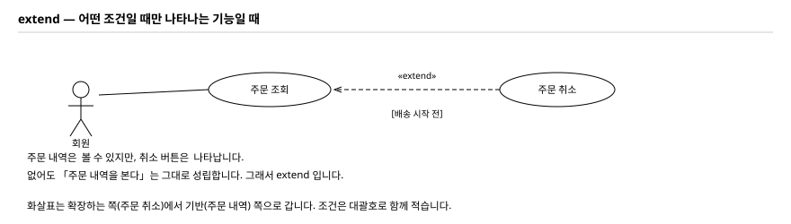
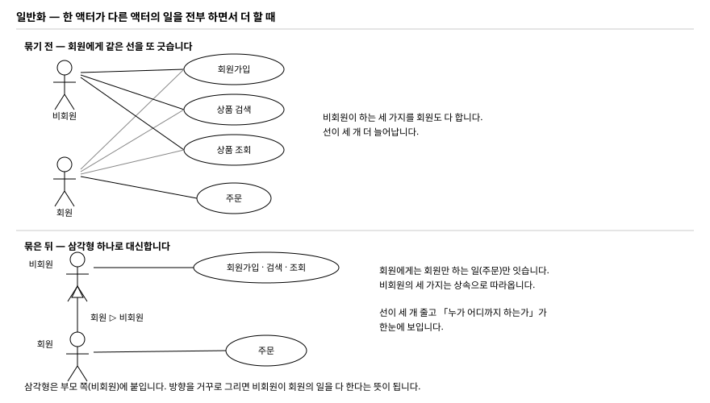
작도 절차
여덟 단계로 그립니다. 각 그림에서 검게 그려진 것이 그 단계에서 새로 추가한 것이고 회색은 앞 단계에서 이미 그려 둔 것입니다.
uc 와 다이어그램 이름을 적습니다.
uc 는 use case diagram 의 약자로, 이 그림이 어떤 종류인지 알려 줍니다.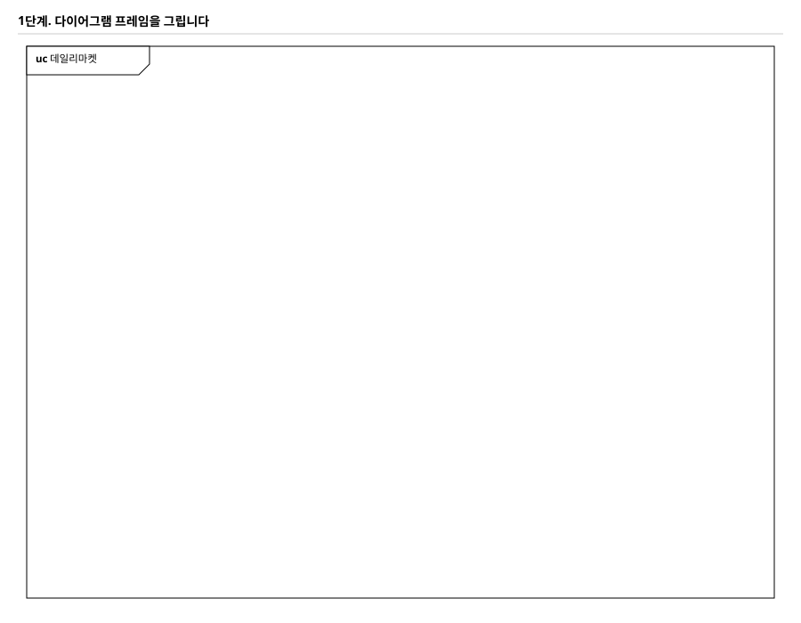
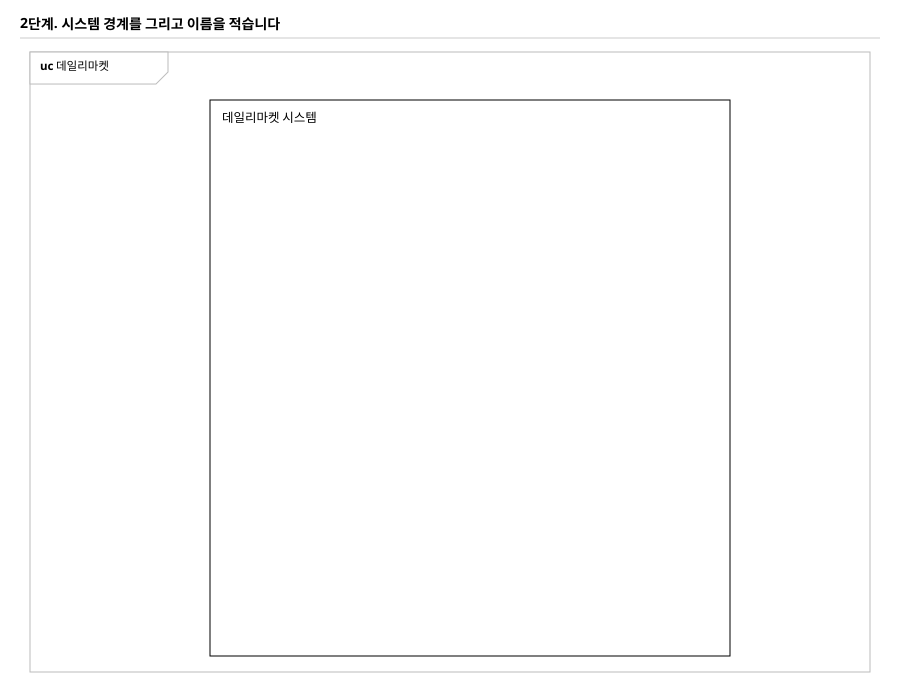
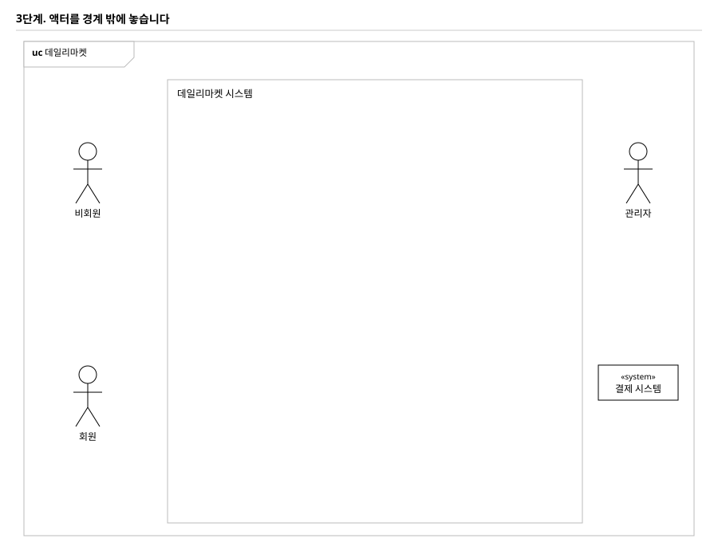
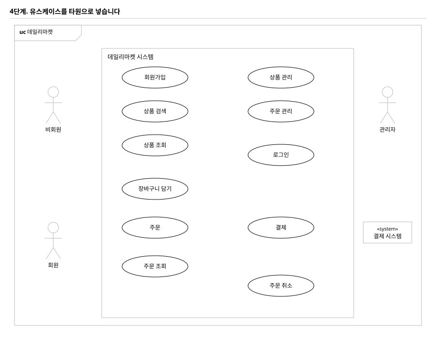
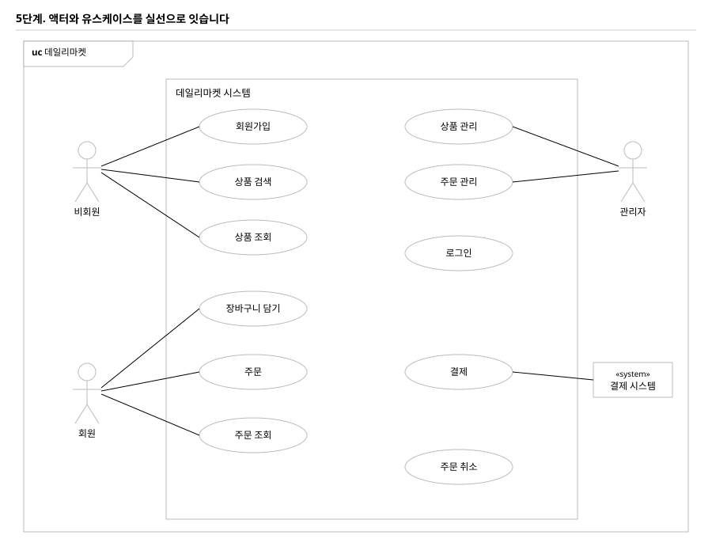


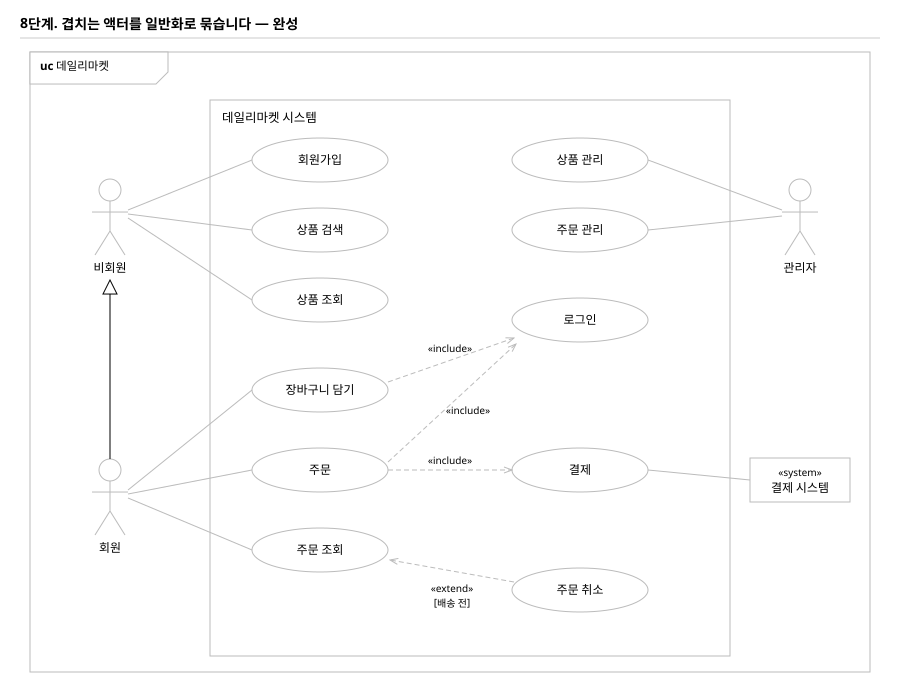
표기상의 오류 유형

그 밖에 자주 나오는 것들을 적어 둡니다.
- include 되는 유스케이스에 액터 선을 또 그은 경우입니다. 로그인은 다른 유스케이스가 부르는 공통 절차이므로 액터와 직접 잇지 않아도 됩니다.
- 타원 안에 화면 이름을 쓴 경우입니다. 상품 목록 화면이 아니라 상품 조회라고 적습니다.
- 액터를 경계 안에 넣은 경우입니다. 액터는 언제나 경계 밖입니다.
- extend 에 조건을 적지 않은 경우입니다. 조건이 없으면 extend 를 쓸 이유가 없습니다.
- 프레임을 빠뜨린 경우입니다. 오각형 이름표가 있어야 UML 다이어그램의 꼴을 갖춥니다.
- 앞에서 적은 SR 번호가 모두 타원으로 나타났습니까. 빠진 것이 있다면 그 요구사항은 설계에서 누락된 것입니다.
- 연관선 가운데 화살촉이 달린 것이 하나라도 있습니까.
- extend 화살표가 확장하는 쪽에서 기반 쪽으로 갑니까. 조건은 대괄호로 적으셨습니까.
- 타원 이름이 화면 이름 대신 하는 일로 적혀 있습니까.
- 액터가 모두 경계 밖에 있습니까.
7유스케이스 명세서
유스케이스 명세서의 개념
다이어그램의 타원 하나를 주고받는 순서까지 상세히 풀어 쓴 문서입니다. 다이어그램이 무엇을 하는지만 보여 준다면, 명세서는 어떤 순서로 주고받는지를 말합니다.
이 문서가 두 가지를 결정합니다. 시스템이 무언가를 한다고 적은 줄마다 화면이 하나씩 바뀌므로 화면의 개수가 정해지고, 대안과 예외가 그대로 화면의 분기가 되므로 화면이 처리해야 할 경우의 수가 정해집니다.
타원이 열 개라도 명세서는 중요한 두 개만 씁니다. 평가 요구가 2건 이상입니다. 가장 복잡한 것과 예외가 많은 것을 고릅니다.
서식의 구성 항목
학습모듈은 개요와 액터, 이벤트 흐름, 처리 내용의 네 부분으로 쓰라고 합니다. 제출 서식은 이 넷을 실무에서 쓰는 여덟 칸으로 펼쳐 놓은 것입니다. 대응은 아래와 같습니다.
| 칸 | 학습모듈 | 무엇을 쓰는가 | 데일리마켓 예시 |
|---|---|---|---|
| 목표 | 개요 | 이 유스케이스가 무엇을 이루려는지 한 문장으로 적습니다 | 고른 상품을 담아 두었다가 한 번에 주문하게 합니다 |
| 유스케이스명 | 개요 | 다이어그램의 타원 이름과 똑같이 적습니다. 번호를 붙이면 찾기 쉽습니다 | 장바구니 담기 (UC-06) |
| 액터 | 액터 | 누가 하는지 적습니다. 외부 시스템이 관여하면 함께 적습니다 | 회원 |
| 사전 조건 | 이벤트 흐름 | 흐름이 시작되기 전에 이미 충족되어 있어야 하는 조건입니다. 충족되지 않으면 흐름이 시작되지 않습니다 | 로그인 상태이고 상세 화면에서 옵션을 고를 수 있습니다 |
| 기본흐름 | 이벤트 흐름 (기본 사항) |
정상적으로 진행되었을 때의 순서입니다. 한 줄에 한 동작씩 번호를 붙여 적습니다 | 1. 회원이 옵션과 수량을 고릅니다 … |
| 대안흐름 | 이벤트 흐름 (추가 사항) |
결과는 같은데 경로가 다른 경우입니다 | 2a. 이미 담긴 상품이면 수량만 더합니다 |
| 예외흐름 | 이벤트 흐름 (추가 사항) |
진행하지 못하도록 막는 경우입니다 | 3a. 비로그인이면 로그인 화면으로 보냅니다 |
| 사후 처리 | 처리 내용 | 끝난 뒤에 무엇이 남는지 적습니다. 저장된 것이나 바뀐 상태입니다 | 장바구니에 1건이 추가되거나 수량이 늘어납니다 |
학습모듈에 나오는 도서 대출 예시도 같은 구조입니다. 사용자가 대출반납기기로 도서를 대출한다는 것이 개요이고, 화면 이름을 하나하나 적으면서 사용자와 시스템이 번갈아 오가는 것이 이벤트 흐름입니다.
기본 · 대안 · 예외 흐름의 구분
세 흐름의 차이를 구분하는 것이 이 단원의 목표입니다. 채점 항목 04 · 05 · 06번이 각각 하나씩 확인합니다.
| 흐름 | 무엇인가 | 판단하는 말 | 채점 |
|---|---|---|---|
| 기본(정상) | 정상적으로 진행되었을 때의 경로 | 중단되거나 분기하지 않고 끝까지 진행된 경우입니다 | 04 |
| 대안 | 실패가 아니라 다른 길 | 원래 하려던 일을 결국 해내는지 물어서 해낸다면 대안입니다 | 05 |
| 예외 | 진행하지 못하고 중단되는 경우 | 같은 질문에 못 한다는 답이 나오면 예외입니다 | 06 |
이 질문 하나로 구분됩니다. 이미 담긴 상품이어서 수량만 더하더라도 결과적으로 장바구니에는 담기므로 대안이고, 재고가 부족하여 담기지 않으면 예외입니다.
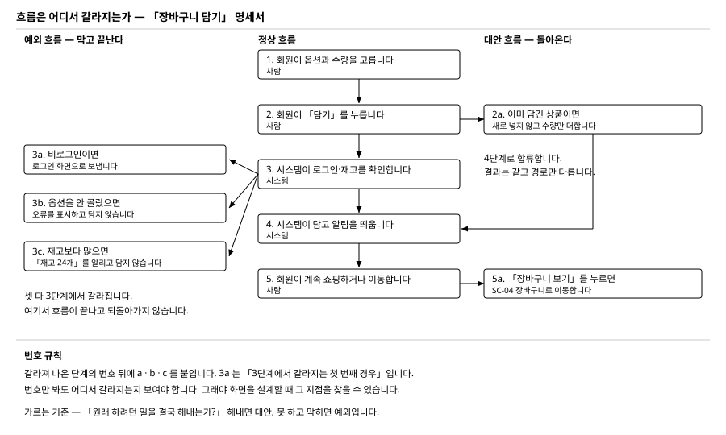
흐름 번호 부여 규칙
갈라져 나온 단계의 번호 뒤에 a, b, c 를 붙입니다. 3a 는 3단계에서 갈라지는 첫 번째 경우라는 뜻입니다. 같은 단계에서 여러 개가 갈라지면 3a, 3b, 3c 로 이어 붙입니다.
번호만 봐도 어디서 갈라지는지 보여야 합니다. 그래야 화면을 설계할 때 그 지점을 찾을 수 있습니다. 1, 2, 3 처럼 이어서 매기면 갈라지는 자리를 알 수 없어 감점됩니다.
작성 절차
- 정상 흐름부터 끝까지 씁니다. 대안과 예외는 아직 생각하지 않습니다.
- 사람과 시스템을 번갈아 씁니다. 한쪽만 쓰면 화면 설계로 이어지지 않습니다.
- 다 쓴 뒤에 한 줄씩 되짚으면서 여기서 갈라질 수 있는지 물어봅니다.
- 갈라진다면 앞의 질문으로 대안인지 예외인지 가릅니다.
- 사전 조건과 사후 처리를 채웁니다. 사전 조건은 1단계가 시작되기 전에 이미 참인 것이어야 합니다.
- 목표와 유스케이스명을 마지막에 다듬습니다.
| 목표 | 회원이 고른 상품을 장바구니에 담아 두었다가 한 번에 주문할 수 있게 합니다. |
| 유스케이스명 | 장바구니 담기 (UC-06) |
| 액터 | 회원 |
| 사전 조건 | 로그인 상태이고, 상품 상세 화면에서 옵션과 수량을 고를 수 있습니다. |
| 기본흐름 |
1. 회원이 상품 상세 화면에서 옵션과 수량을 고릅니다. 2. 「장바구니 담기」를 누릅니다. 3. 시스템이 로그인 상태와 재고를 확인합니다. 4. 시스템이 장바구니에 상품을 담고 담기 완료 알림을 띄웁니다. 5. 회원은 계속 쇼핑하거나 장바구니로 이동합니다. |
| 대안흐름 |
2a. 이미 담긴 상품이면 새로 추가하지 않고 수량만 더합니다. 5a. 알림에서 「장바구니 보기」를 누르면 SC-04 장바구니로 이동합니다. |
| 예외흐름 |
3a. 비로그인이면 로그인 화면으로 보내고, 로그인 후 원래 화면으로 되돌립니다. 3b. 옵션을 고르지 않았으면 옵션 칸에 오류를 표시하고 담지 않습니다. 3c. 재고보다 많은 수량이면 「재고 24개」를 알리고 담지 않습니다. |
| 사후 처리 | 장바구니에 상품 1건이 추가되거나 기존 항목의 수량이 늘어납니다. |
예외 흐름의 누락과 감점
학습모듈이 직접 짚는 대목이 있습니다. 개발자와 품질 관리자가 UI 시나리오 문서를 두고 가장 많이 불만을 내는 부분이 예외 케이스 정리가 부실하다는 점이라고 합니다.
아래 세 가지는 빠뜨리지 말고 적으시기 바랍니다. 쇼핑몰이 아니어도 형태는 같습니다.
| 형태 | 쇼핑몰이라면 | 다른 서비스라면 |
|---|---|---|
| 권한 없음 | 비로그인 상태로 담으려 함 | 예약 서비스에서 비로그인으로 예약, 도서관에서 대출 권한 없음 |
| 필수값 없음 | 옵션을 고르지 않음 | 날짜를 고르지 않음, 필수 항목 미입력 |
| 자원 부족 | 재고보다 많은 수량 | 좌석이 다 참, 대출 가능 권수 초과 |
외부 연동이 있다면 응답이 오지 않는 경우를 반드시 적으셔야 합니다. 결제처럼 밖으로 요청을 보내는 흐름에서 이것을 빼면 같은 주문이 두 번 처리되는 설계가 됩니다. 실무에서도 자주 문제가 되는 부분입니다.
후속 산출물과의 연계
명세서를 다 쓰고 나면 두 가지가 거의 자동으로 나옵니다. 시스템이 무엇을 보여 주거나 띄운다고 적은 줄마다 화면이 하나씩 생기므로 화면 목록이 나오고, 3a 에서 로그인 화면으로 보냈다가 되돌린다고 적은 것이 그대로 화면 흐름도의 점선 분기가 됩니다.
명세서를 간략하게만 쓰면 뒤의 두 산출물이 근거를 잃습니다. 반대로 여기를 상세히 써 두면 다음 단계가 수월해집니다.
- 기본흐름에 사용자가 하는 줄과 시스템이 하는 줄이 번갈아 나옵니까. 한쪽만 있으면 04번을 잃습니다.
- 대안흐름에 적은 것들이 실패가 아닌 경우입니까. 실패를 대안에 넣으면 05번과 06번이 같이 흔들립니다.
- 예외흐름에 권한과 필수값, 자원 세 형태가 모두 있습니까.
- 대안과 예외의 번호가 갈라지는 단계 번호를 달고 있습니까.
- 사전 조건이 1단계 전에 이미 참인 것입니까. 흐름 중간의 조건을 사전 조건에 적지는 않으셨습니까.
- 사후 처리에 남는 것이 적혀 있습니까.
- 두 건 이상 쓰셨습니까.
8스타일가이드
스타일가이드의 개념
화면을 그리기 전에 색과 글자, 간격, 부품을 미리 정해 문서로 고정해 두는 일입니다. 정해 두지 않으면 화면마다 가격 색이 달라지고 버튼 높이가 제각각이 됩니다.
학습모듈이 말하는 스토리보드 3단계 가운데 두 번째인 스타일 확정이 여기에 해당합니다. 1단계가 메뉴 구성도이고 3단계가 설계하기이므로 과제 순서와 그대로 맞습니다.
평가도구가 요구하는 항목은 구동환경, 로고, 폰트, 색상, 레이아웃, 구성요소의 여섯 가지입니다. 구동환경과 로고는 첫 장에 한 줄씩 적으면 되고, 나머지 넷을 아래 순서로 정합니다.
| 순서 | 정하는 것 | 왜 이 순서인가 | 채점 |
|---|---|---|---|
| 1 | 색 | 가장 먼저 정합니다. 색이 정해져야 버튼과 배지의 색을 정할 수 있습니다 | 09 |
| 2 | 글자 크기 | 색 다음입니다. 크기가 정해져야 버튼 안의 글자 크기가 정해집니다 | 09 |
| 3 | 부품 | 앞의 두 가지로 버튼과 입력칸, 아이콘을 만듭니다 | 11 |
| 4 | 레이아웃 | 부품을 어디에 어떻게 배치할지 정합니다. 배점이 가장 큽니다 | 10 |
| 5 | 적용 예시 | 앞의 넷으로 실제 화면을 하나 조립해 보입니다. 과제 3과 대조할 기준이 됩니다 | 12 13 16 |
1단계 · 색상 선정
색을 먼저 고르고 어디에 쓸지 나중에 정하면 화면마다 쓰임이 달라집니다. 역할을 먼저 정하고 그 역할에 색을 하나씩 배정하시기 바랍니다. 주조와 보조, 강조 세 가지에 회색 몇 단계를 더하면 충분합니다.
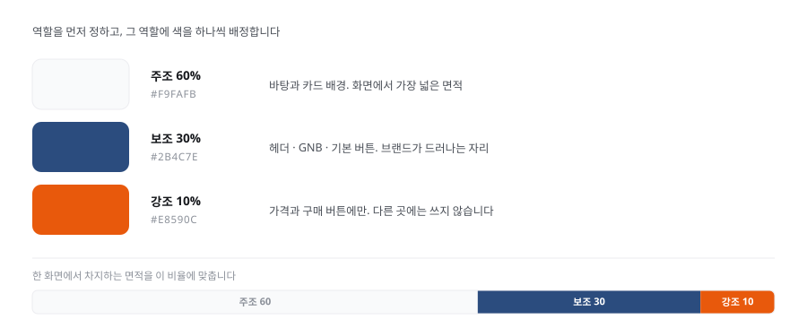
강조색을 어디에 쓸지 문장으로 못 박아 두는 것이 중요합니다. 데일리마켓 예시에서는 가격과 구매 버튼에만 쓴다고 적었습니다. 이 한 줄이 없으면 화면마다 가격 색이 달라져 16번에서 감점됩니다.
대비도 함께 확인합니다. 흰 바탕에 얹는 글자는 4.5대 1 이상이어야 읽힙니다. 예시의 강조색은 3.6대 1 이어서 본문 크기로는 쓸 수 없고, 그래서 가격을 20px 굵게로 고정했습니다. 이렇게 근거를 적어 두면 설계가 됩니다.
2단계 · 글자 크기 체계 수립
크기를 먼저 나열하지 말고 쓰는 자리를 먼저 적으시기 바랍니다. 메인 배너 문구, 화면 제목, 상품 가격, 본문, 배송 안내처럼 자리를 적어 놓고 각 자리에 크기와 굵기를 배정합니다.
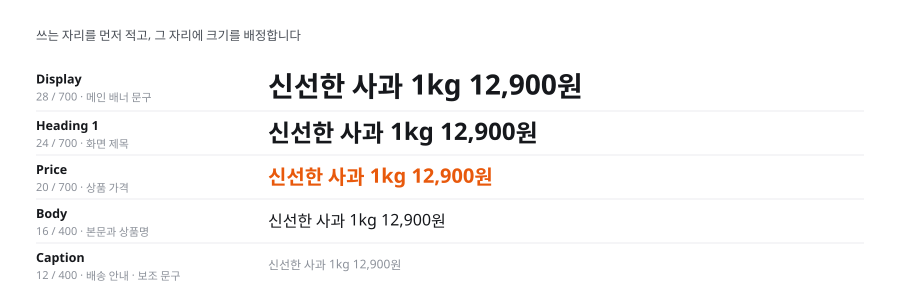
서체는 한 가지로 하고 굵기를 400과 500, 700 셋으로 쓰면 관리가 쉽습니다. 기본 크기를 16px 로 잡고 행간은 제목 1.3, 본문 1.5 정도가 무난합니다.
3단계 · 구성요소 제작
앞에서 정한 색과 글자로 버튼과 입력칸, 아이콘을 만듭니다. 버튼은 종류만 그리지 말고 상태까지 그리셔야 합니다. 기본과 hover, 비활성 세 가지입니다.
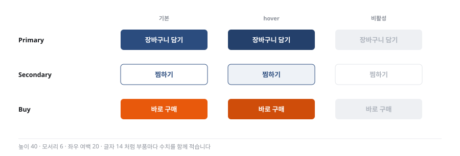
부품마다 수치를 함께 적습니다. 높이 40, 모서리 6, 좌우 여백 20, 글자 14 와 같이 적어 두면 프로토타입에서 그대로 옮길 수 있습니다. 입력칸도 같은 방식으로 기본과 포커스, 오류 상태를 그립니다.
모서리와 간격도 이 단계에서 정합니다. 간격은 4의 배수로 4, 8, 16, 24, 32 정도만 쓰기로 하고, 모서리는 배지 2, 버튼 6, 카드 10 처럼 자리별로 값을 정해 둡니다.
4단계 · 레이아웃 결정
여섯 항목 가운데 이 항목만 10점으로 다른 항목의 두 배입니다. 콘텐츠 폭과 칼럼 수, 거터, 마진을 적고 화면 폭이 바뀔 때 상품이 몇 열이 되는지까지 적어야 합니다.
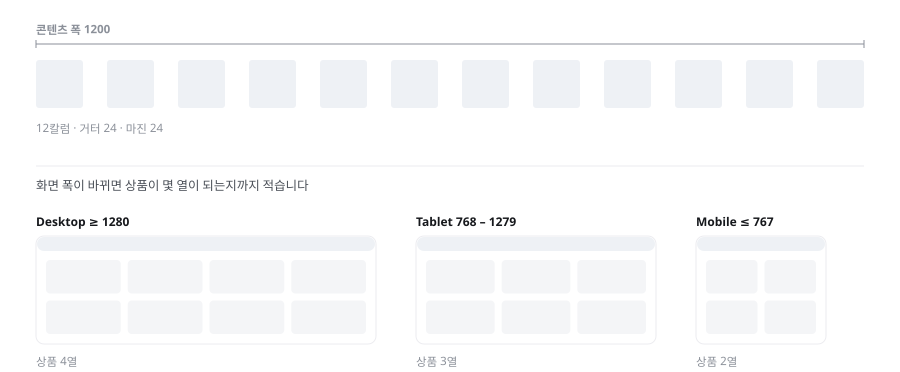
영역 높이도 함께 적습니다. 헤더 56, GNB 44, 배너 360, 푸터 280 과 같이 적어 두면 프로토타입에서 화면을 잡을 때 기준이 됩니다.
5단계 · 적용 예시 작성
앞의 네 단계에서 정한 값으로 실제 화면을 하나 만들어 보입니다. 헤더와 상품 카드 정도면 충분합니다. 이 장이 과제 3의 12 · 13 · 16번을 채점할 때 대조 기준이 되므로 빠뜨리지 마시기 바랍니다.
화면 옆에 어느 값을 썼는지 주석을 답니다. 헤더 높이 56, 가격은 Price 20/700 에 강조색, 버튼은 높이 32 에 모서리 6 과 같이 적어 두면 강사가 프로토타입과 나란히 놓고 확인할 수 있습니다.
완성된 예시 지면을 원본으로 열어 보실 수 있습니다. 일곱 절로 되어 있고 위 다섯 단계가 그 안에 들어 있습니다.
작성상의 오류 유형
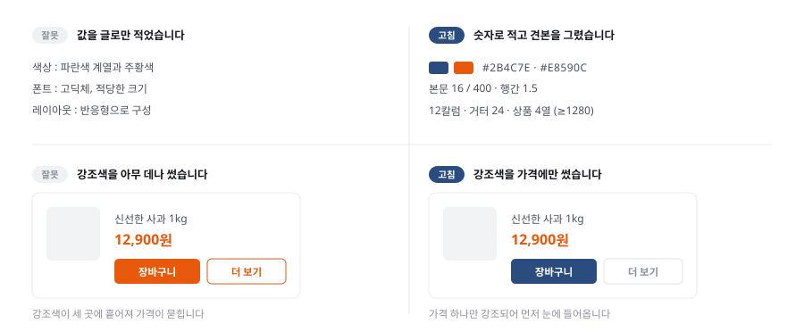
- 색을 여덟 개 늘어놓고 어디에 쓰는지는 적지 않은 경우입니다. 색의 개수보다 역할이 정해졌는지가 중요합니다.
- 글자 크기를 열 단계 이상으로 잘게 나눈 경우입니다. 정해 놓고도 지키기 어려워집니다.
- 버튼을 기본 상태만 그린 경우입니다. hover 와 비활성이 없으면 14 · 15번의 근거가 없습니다.
- 견본 없이 값만 적은 경우입니다. 색 칩과 버튼, 글자는 실제 크기로 그려 넣습니다.
- 적용 예시를 넣지 않은 경우입니다. 값만 있고 조립한 화면이 없으면 대조가 어렵습니다.
- 구동환경과 로고를 포함해 여섯 항목이 모두 들어 있습니까.
- 색마다 어디에 쓰는지가 적혀 있습니까. 강조색을 쓰는 자리를 한정해 두셨습니까.
- 글자 크기마다 쓰는 자리가 적혀 있고, 견본이 실제 크기로 그려져 있습니까.
- 버튼에 기본과 hover, 비활성 세 상태가 있습니까.
- 레이아웃에 칼럼과 거터, 마진에 더해 화면 폭별 상품 열 수가 적혀 있습니까.
- 값이 파란색이 아니라
#2b4c7e처럼 숫자로 적혀 있습니까. - 마지막에 헤더나 상품 카드를 조립해 보인 장이 있습니까.
9화면 목록 · 화면 흐름도 · 메뉴 구조도
세 산출물의 관계
앞의 단계들이 무엇을 만들지를 정하는 일이었다면, 이 단계는 그것이 어느 화면에서 일어나는지를 정하는 일입니다. 유스케이스 명세서에 적어 둔 동작을 화면 위에 배치하는 작업에 해당합니다.
산출물은 셋입니다. 셋이 각각 다른 질문에 답합니다.
| 산출물 | 답하는 질문 | 없으면 무엇이 안 되는가 | 수행준거 | 채점 |
|---|---|---|---|---|
| 화면 목록 | 화면이 모두 몇 개이고 무엇인가 | 프로토타입에서 무엇을 몇 장 만들지 정해지지 않습니다 | 6 | 19 |
| 화면 흐름도 | 화면과 화면 사이를 어떻게 오가는가 | 프로토타입의 화면 이동을 무엇을 보고 연결할지 알 수 없습니다 | 4 | 17 |
| 메뉴 구조도 | 사용자가 그 화면을 어떻게 찾아 들어가는가 | GNB 에 무엇을 몇 개 넣을지 정해지지 않습니다 | 5 | 18 |
세 문서는 따로 만드는 것이 아니라 앞의 것을 재료로 씁니다. 화면 목록에서 상자를 뽑아 흐름도를 그리고, 흐름도에 나온 화면 가운데 사용자가 스스로 찾아 들어가는 것만 골라 메뉴 구조도를 만듭니다.
1단계 · 화면 도출
유스케이스 명세서의 기본 흐름을 한 줄씩 읽으면서 시스템이 무엇을 한다고 적은 줄을 찾습니다. 그 줄마다 사용자에게 보여 줄 화면이 하나씩 필요합니다. 「시스템이 상품 목록을 보여 준다」는 줄이 있으면 상품 목록 화면이 있어야 합니다.
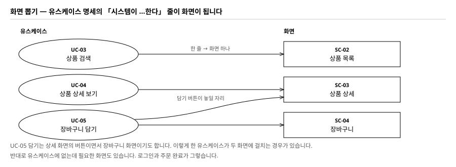
다 뽑은 뒤에 번호를 붙입니다. 사용자가 지나는 순서대로 SC-01 부터 부여합니다. 이 번호를 흐름도와 프로토타입, 채점표가 모두 함께 씁니다. 번호를 나중에 바꾸면 세 문서를 모두 고쳐야 하므로 이 시점에 확정하는 것이 바람직합니다.
2단계 · 화면 목록 작성
네 열로 만듭니다. 화면코드, 화면명, 그 화면이 담는 폼과 주요 요소, 그리고 내부인지 외부인지입니다.
세 번째 열이 중요합니다. 화면 이름만 적어 두면 프로토타입에서 무엇을 그려야 할지 다시 생각해야 합니다. 상품 목록 화면에 카테고리 탭과 정렬 선택, 상품 카드, 페이지 이동이 들어간다고 적어 두면 그대로 그리면 됩니다.
네 번째 열의 내부와 외부는 채점 19번이 그대로 묻는 것입니다. 우리가 직접 그리는 화면이 내부이고, 다른 시스템의 화면을 불러오는 것이 외부입니다.
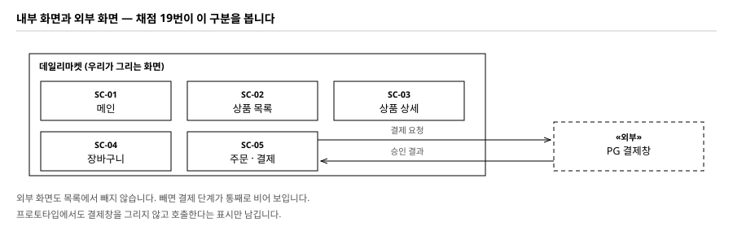
외부 화면을 목록에서 빼 버리면 결제 단계가 통째로 비어 보입니다. 반대로 외부 화면을 우리가 그린 것처럼 프로토타입에 넣으면 실제와 다른 설계가 됩니다. 목록에 넣되 외부라고 표시하는 것이 맞습니다.
| 화면코드 | 화면명 | 포함하는 폼 · 주요 요소 | 구분 |
|---|---|---|---|
| SC-01 | 메인 | 배너, 카테고리 바로가기, 추천 상품 8개 | 내부 |
| SC-02 | 상품 목록 | 카테고리 탭, 정렬 선택, 상품 카드 그리드, 페이지 이동 | 내부 |
| SC-03 | 상품 상세 | 상품 이미지, 가격, 원산지, 재고, 중량·수량 선택, 장바구니 담기 | 내부 |
| SC-04 | 장바구니 | 담은 상품 목록, 수량 변경, 삭제, 합계 금액, 주문하기 | 내부 |
| SC-05 | 주문 · 결제 | 배송지 입력 폼, 결제 수단 선택, PG 결제창 호출 | 내부 · 외부 |
실제 제출에서는 회원가입과 로그인, 주문 완료, 주문 내역까지 넣어 빠짐없이 기재하는 것이 안전합니다.
3단계 · 흐름도 표기 기호
흐름도에 쓰는 기호는 다섯 가지가 전부입니다. 유스케이스 다이어그램처럼 정해진 표준이 있는 것은 아니지만, 아래대로 그리면 읽는 사람이 헷갈리지 않습니다.
| 기호 | 이름 | 무엇을 뜻하는가 | 표기 규칙 |
|---|---|---|---|
| 화면 | 사용자에게 보여 주는 한 장의 화면입니다 | 사각형 안에 화면코드와 화면명을 함께 적습니다 | |
| 외부 화면 | 다른 시스템의 화면입니다. 우리가 그리지 않습니다 | 테두리를 점선으로 하고 위에 «외부» 를 적습니다 | |
| 이동 | 사용자가 무엇을 눌러 다음 화면으로 넘어갑니다 | 실선 화살표를 긋고 선 위에 무엇을 눌렀는지 적습니다 | |
| 조건부 이동 | 제약사항 때문에 원래 가려던 곳 대신 끼어드는 이동입니다 | 점선 화살표를 긋고 어떤 조건인지 적습니다 | |
| 되돌아오기 | 끼어든 일이 끝나면 원래 있던 화면으로 돌아갑니다 | 반대 방향으로 한 번 더 긋습니다. 이 선이 없으면 흐름이 끊깁니다 |
화살표를 양쪽 끝에 다 다는 양방향 표기는 쓰지 않습니다. 가는 것과 오는 것의 조건이 서로 다르므로 선을 두 번 긋는 편이 정확합니다.
4단계 · 화면 흐름도 작도
한 번에 다 그리려고 하면 선이 엉킵니다. 아래 순서로 나눠 그리면 정리된 그림이 나옵니다.
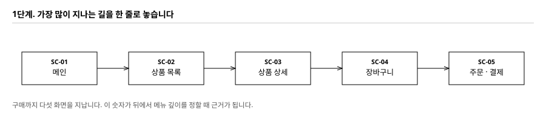
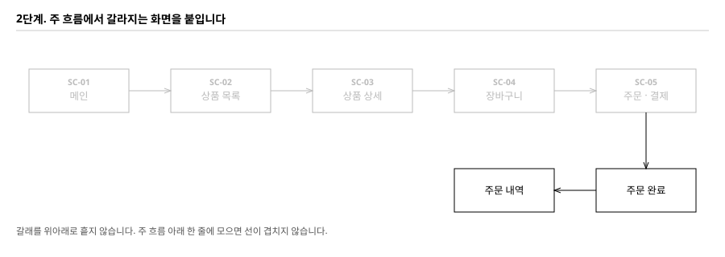
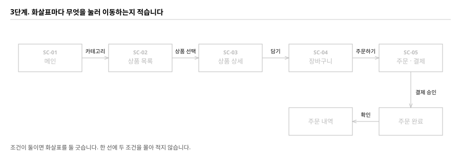
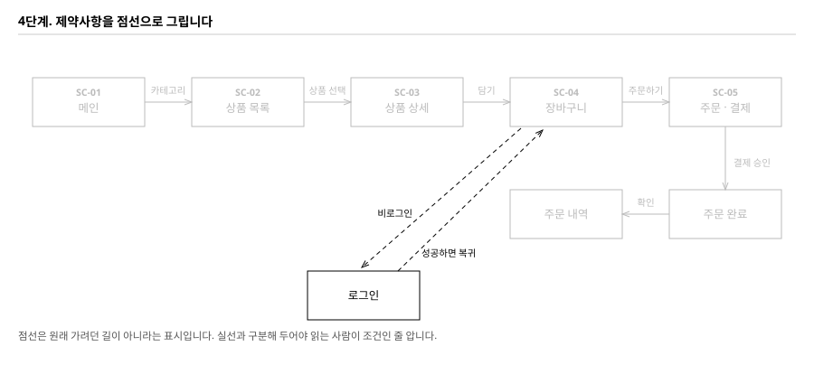
수행준거 4의 문구가 제약사항을 화면과 폼 흐름설계에 반영할 수 있다입니다. 반영한다는 말은 그렸다는 뜻입니다. 문장으로만 적어 두면 반영한 것이 아닙니다.
5단계 · 메뉴 구조도 작도
흐름도가 화면 사이의 이동을 그린 것이라면, 메뉴 구조도는 사용자가 처음부터 찾아 들어가는 길을 그린 것입니다. 둘은 다릅니다. 로그인과 주문 완료는 흐름도에는 있지만 메뉴에는 올리지 않습니다. 사용자가 메뉴에서 눌러 들어가는 화면이 아니기 때문입니다.
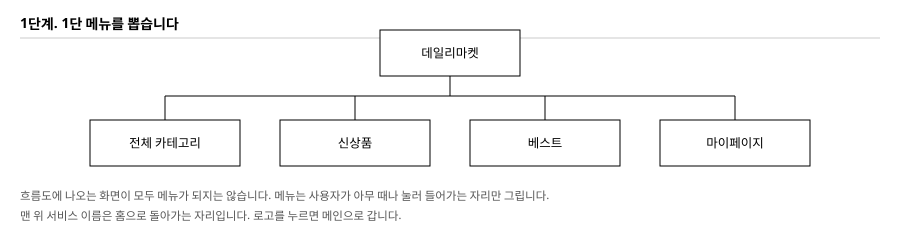
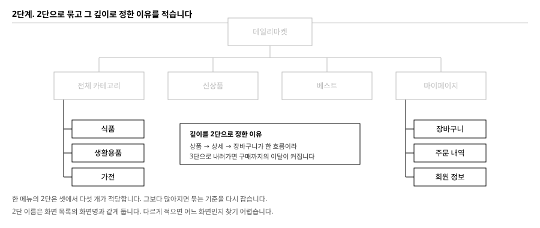
메뉴 깊이의 결정 근거
메뉴가 한 단 깊어질 때마다 목표 화면까지 한 번 더 눌러야 합니다. 쇼핑몰은 누르는 횟수가 늘수록 구매까지 가지 못하고 나가는 사람이 늘어납니다.
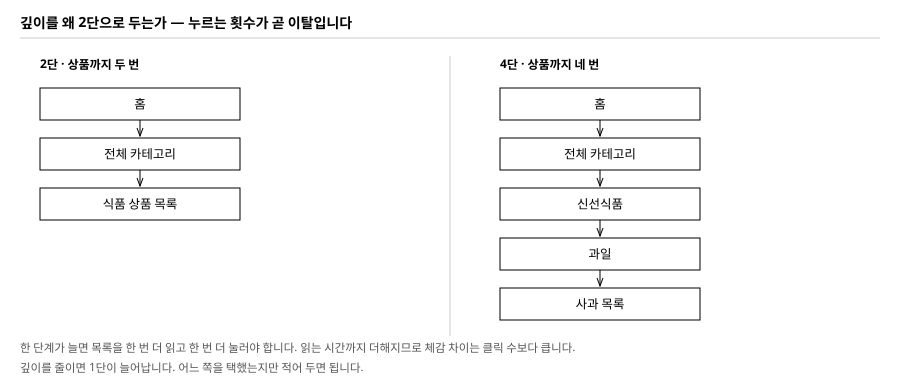
그렇다고 깊이를 무조건 줄이면 1단 메뉴가 늘어나 상단이 복잡해집니다. 이 맞바꿈을 어떻게 정했는지 한 줄로 적어 둡니다. 「상품 → 상세 → 장바구니가 한 흐름이라 3단으로 내려가면 구매까지의 이탈이 커집니다」 정도면 충분합니다.
작성상의 오류 유형
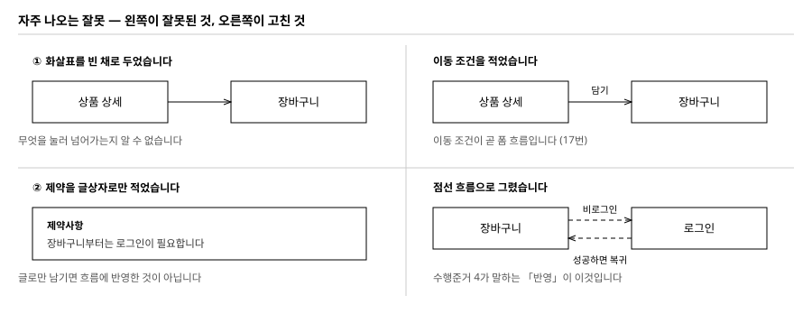
- 화살표만 긋고 조건을 적지 않은 경우입니다. 무엇을 눌러 넘어가는지 알 수 없어 17번의 근거가 없습니다.
- 제약사항을 글상자로만 적은 경우입니다. 흐름으로 그리지 않으면 반영한 것이 아닙니다.
- 되돌아오는 선을 빠뜨린 경우입니다. 로그인 화면으로 보내 놓고 그 뒤를 그리지 않으면 흐름이 끊깁니다.
- 화면 목록과 흐름도의 화면코드가 서로 다른 경우입니다. 목록에서 번호를 고친 뒤 흐름도를 안 고쳐서 생깁니다.
- 메뉴 구조도에 로그인과 주문 완료까지 올린 경우입니다. 메뉴는 사용자가 찾아 들어가는 길만 그립니다.
- 깊이만 그리고 이유를 적지 않은 경우입니다. 18번의 직관적이라는 항목을 설명할 수 없습니다.
- 요구사항 SR-01 부터 마지막까지, 각 번호에 대응하는 화면이 목록에 있습니까.
- 화면 목록에 구분 열이 있고 외부 화면이 표시되어 있습니까.
- 화면마다 그 안에 들어가는 폼과 주요 요소가 적혀 있습니까.
- 흐름도의 모든 화살표에 이동 조건이 적혀 있습니까.
- 제약사항이 점선으로 그려져 있고, 되돌아오는 선까지 있습니까.
- 흐름도의 화면코드가 화면 목록의 코드와 하나도 어긋나지 않습니까.
- 메뉴 구조도에 로그인이나 주문 완료 같은 화면이 잘못 올라가 있지 않습니까.
- 메뉴 깊이를 그렇게 정한 이유가 그림 옆에 적혀 있습니까.
10프로토타입
프로토타입의 요건
작업지시서에 Interactive 한 화면이 구현되었는지 테스트로 확인한다고 적혀 있습니다. 화면 이미지를 여러 장 나열하는 것만으로는 이 항목을 충족하지 못합니다. 눌렀을 때 다음 화면으로 넘어가야 합니다.
학습모듈은 종이 프로토타입과 디지털 프로토타입을 구분합니다. 기간이 짧고 협의가 빠르면 종이를 쓰고, 재사용이 필요하거나 산출물에 가까운 결과가 필요하면 디지털을 씁니다. 이 평가는 캡처를 산출물로 내야 하므로 디지털에 해당하고, 도구는 Figma 를 씁니다.
채점 항목과 확인 방법
과제 3의 여덟 항목 가운데 여섯이 프로토타입을 보고 판정됩니다. 나머지 둘인 18번과 19번은 앞 단계에서 만든 메뉴 구조도와 화면 목록이 받습니다.
| 채점 | 무엇을 보는가 | 어디에서 확인하는가 | 배점 |
|---|---|---|---|
| 12 | 메인 레이아웃 | 스타일가이드의 레이아웃 장과 메인 화면 캡처를 나란히 놓고 봅니다 | 5 |
| 13 | 로고 형태 | 스타일가이드 첫 장의 로고와 화면 헤더의 로고를 대조합니다 | 5 |
| 14 | GNB 메뉴 효과 | Prototype 패널에 GNB 를 대상으로 한 줄이 있는지 봅니다 | 5 |
| 15 | 그 밖의 효과 | GNB 가 아닌 다른 대상의 효과가 한 줄 더 있는지 봅니다 | 5 |
| 16 | 스타일 일관성 | 색과 글자가 스타일가이드에서 정한 값 그대로인지 봅니다 | 5 |
| 17 | 화면 전환 · 폼 흐름 | 캔버스에 프레임을 잇는 연결선이 있는지 봅니다 | 5 |
여섯 항목 가운데 넷이 앞에서 만든 문서와 대조해서 판정됩니다. 프로토타입을 잘 만드는 것보다 앞 문서와 어긋나지 않게 만드는 편이 점수에 유리합니다.
1단계 · 프레임 생성과 명명
Figma 의 프레임 하나가 화면 한 장입니다. 도구 모음에서 Frame 을 고르거나 F 를 누르고
캔버스에 끌어 만듭니다. 폭은 데스크톱 기준 1440 으로 잡습니다.
스타일가이드에서 콘텐츠 폭을 1200 으로 정했으므로 좌우에 120씩 남습니다.
만든 뒤에 이름을 바꿉니다. 왼쪽 레이어 목록에서 이름을 두 번 누르면 고칠 수 있습니다. SC-01 메인처럼 화면코드를 앞에 붙이시기 바랍니다.
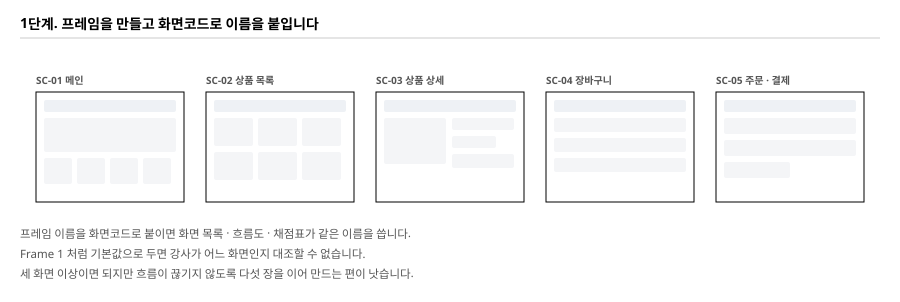
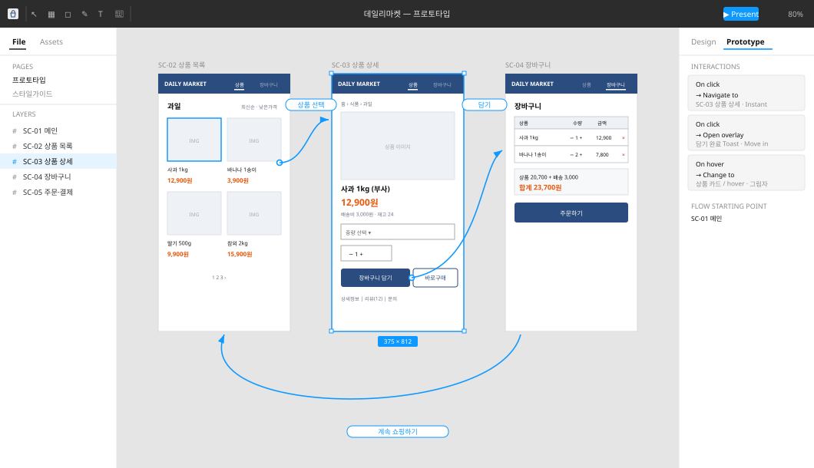
세 화면 이상이면 조건은 채워지지만, 목록에서 상세로, 상세에서 장바구니로 이어지는 흐름이 끊기지 않게 다섯 장을 만드는 것이 바람직합니다. 화면 세 장으로는 폼 흐름이 보이지 않아 17번을 설명하기 어렵습니다.
2단계 · 스타일가이드 값의 적용
이 단계에서 색을 새로 고르거나 버튼 높이를 다시 정하면 안 됩니다. 스타일가이드와 어긋나는 순간 12번과 13번, 16번이 함께 흔들립니다.
| 스타일가이드 항목 | 프레임에서 확인되는 자리 | 채점 |
|---|---|---|
| 로고 | 헤더 왼쪽. 형태와 비율이 가이드와 같아야 합니다 | 13 |
| 색 | 헤더와 기본 버튼은 주색, 가격은 강조색. 정해 둔 자리에만 씁니다 | 16 |
| 글자 | 화면 제목은 Heading, 가격은 Price, 본문은 Body | 16 |
| 부품 | 버튼 높이 40, 모서리 6. 상태까지 그려 둔 것을 그대로 씁니다 | 14 15 |
| 레이아웃 | 콘텐츠 폭과 칼럼, 상품 열 수. 메인 화면에서 대조합니다 | 12 |
Figma 에는 색과 글자를 스타일로 등록하는 기능이 있습니다. 오른쪽 패널의 색 옆에 있는 스타일 아이콘을 눌러 등록해 두면, 나중에 값을 한 번만 고쳐도 모든 화면에 반영됩니다. 손으로 색값을 매번 입력하면 화면마다 조금씩 달라집니다.
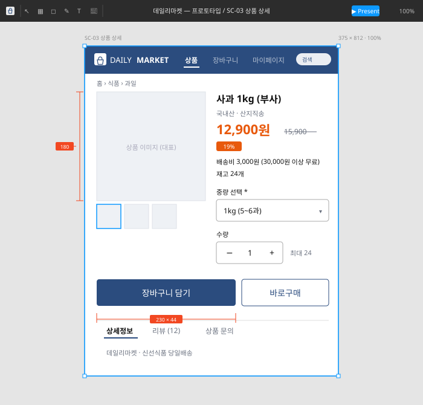
3단계 · 프레임 연결
오른쪽 패널의 Prototype 탭으로 바꿉니다. 프레임이나 그 안의 요소를 고르면 오른쪽 가장자리에 동그란 점이 나타납니다. 그 점을 끌어 다음 프레임에 놓으면 연결이 생깁니다.
무엇을 연결할지는 이미 정해져 있습니다. 흐름도에 그려 둔 화살표가 그대로 연결 하나가 됩니다. 상품 카드에서 상세로, 담기 버튼에서 장바구니로, 화살표를 하나씩 옮깁니다.
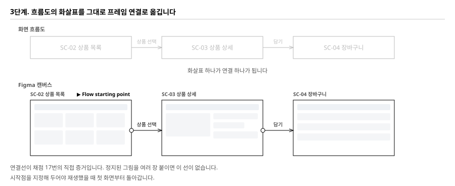
앞의 완성 예시에서 캔버스 오른쪽 INTERACTIONS 목록이 이렇게 만든 연결들입니다. 프레임 사이의 연결선과 목록의 줄 수가 맞아야 합니다.
첫 화면에는 Flow starting point 를 지정합니다. 프레임을 고른 뒤 Prototype 탭 위쪽의 더하기를 누르면 됩니다. 지정하지 않으면 재생했을 때 어디에서 시작할지 정해지지 않습니다.
인터랙션의 구성 요소
연결을 만들면 패널에 네 칸이 나타납니다. 네 칸을 다 채운 것이 연결 하나입니다.
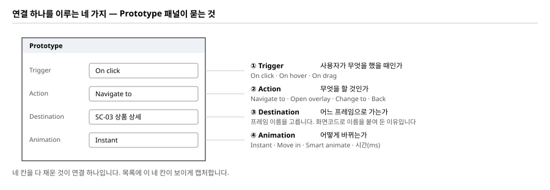
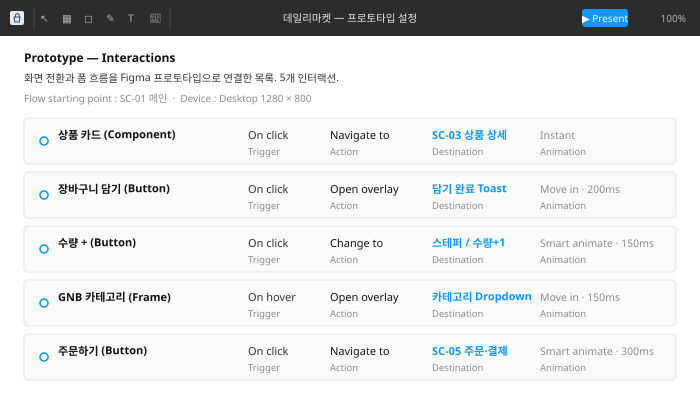
| 칸 | 자주 쓰는 값 | 언제 쓰는가 |
|---|---|---|
| Trigger | On click | 눌러서 넘어가는 보통의 이동입니다 |
| On hover | 얹기만 해도 반응하는 경우입니다. GNB 드롭다운이 여기에 해당합니다 | |
| Action | Navigate to | 다른 화면으로 넘어갑니다. 화면 전환이 이것입니다 |
| Open overlay | 지금 화면 위에 겹쳐 띄웁니다. 드롭다운과 토스트가 여기에 해당합니다 | |
| Change to | 같은 자리에서 모양만 바꿉니다. 버튼의 hover 상태가 여기에 해당합니다 | |
| Back | 직전 화면으로 되돌아갑니다. 흐름도의 되돌아오는 선이 이것입니다 | |
| Animation | Instant | 화면이 바로 바뀝니다. 보통의 이동에 씁니다 |
| Move in · Smart animate | 겹쳐 뜨거나 이어져 보여야 할 때 씁니다. 시간은 150에서 300 사이가 무난합니다 |
4단계 · 효과 구현
14번과 15번은 서로 다른 항목입니다. 하나는 GNB 에 걸린 효과이고, 하나는 그 밖의 효과입니다. 둘을 한 줄에 몰아 적으면 하나로 봅니다.
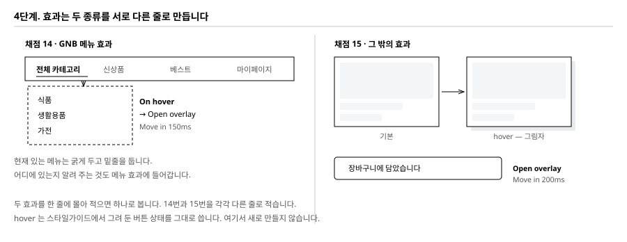
GNB 효과는 드롭다운이 가장 만들기 쉽습니다. 메뉴 항목을 고르고 Trigger 를 On hover, Action 을 Open overlay 로 두면 됩니다. 지금 보고 있는 화면의 메뉴를 굵게 두고 밑줄을 긋는 것도 메뉴 효과에 들어갑니다.
완성 예시의 패널에서 GNB 카테고리 줄과 상품 카드 줄이 서로 다른 줄로 남아 있는 것을 확인하시기 바랍니다. 이렇게 나뉘어야 14번과 15번이 각각 인정됩니다.
그 밖의 효과는 상품 카드의 hover 나 담기 버튼의 토스트가 만들기 쉽습니다. 카드 hover 는 스타일가이드에서 그려 둔 hover 상태를 Change to 로 연결하면 됩니다. 여기서 새 모양을 만들지 마시고 가이드에 있는 것을 그대로 쓰시기 바랍니다.
제약사항이 흐름도에만 있고 프로토타입에 없으면 17번의 폼 흐름이 연결되었다는 판정을 받기 어렵습니다.
5단계 · 결과 화면 캡처
세 장이 각각 다른 것을 증명합니다. 한 장이라도 빠지면 그 항목은 확인할 근거가 없어집니다.
앞에서 본 완성 예시 세 장이 그대로 이 세 장에 해당합니다. 캔버스, 대표 화면, Prototype 패널 순서로 제출한 것과 같습니다.
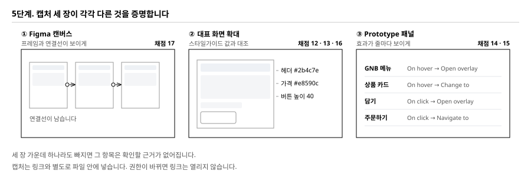
- 캔버스 캡처는 프레임 이름과 연결선이 함께 보이게 찍습니다. 너무 축소하면 이름이 읽히지 않고, 너무 확대하면 연결선이 잘립니다.
- 화면 확대는 메인 화면으로 촬영하는 것이 바람직합니다. 12번이 메인 레이아웃을 보기 때문입니다.
- Prototype 패널 캡처는 인터랙션 목록이 여러 줄 보이는 상태로 찍습니다. 한 줄만 보이면 14번과 15번을 함께 확인할 수 없습니다.
- 세 장 모두 파일 안에 넣습니다. 링크만 내면 공유 권한이 바뀌었을 때 평가 근거가 사라집니다.
스타일 일관성의 기술 방법
16번은 스타일이 UI 표준 가이드에 따라 일관성 있게 적용되었는지를 봅니다. 지켰다고 쓰는 것으로는 확인이 되지 않습니다. 어디에 무엇을 썼는지를 적어야 대조할 수 있습니다.
색값과 수치를 적어 두면 강사가 스타일가이드 지면과 화면 캡처를 대조하기 쉬워집니다. 반대로 문장만 있으면 화면을 하나하나 재 보아야 하므로 판정이 박해집니다.
작성상의 오류 유형
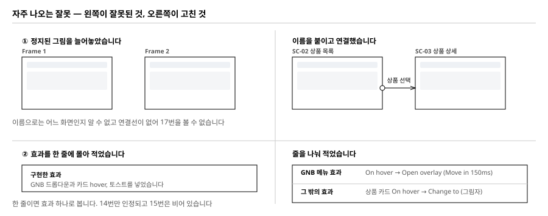
- 프레임 이름을 Frame 1 그대로 둔 경우입니다. 어느 화면인지 대조할 수 없습니다.
- 화면만 그리고 연결하지 않은 경우입니다. 연결선이 없으면 17번의 근거가 없습니다.
- 효과를 한 줄에 몰아 적은 경우입니다. 14번만 인정되고 15번은 비어 있게 됩니다.
- 프로토타입에서 색이나 버튼 높이를 새로 정한 경우입니다. 스타일가이드와 어긋나 16번에서 감점됩니다.
- Flow starting point 를 지정하지 않은 경우입니다. 재생했을 때 어디에서 시작할지 정해지지 않습니다.
- 링크만 내고 캡처를 빠뜨린 경우입니다. 권한이 바뀌면 평가할 것이 남지 않습니다.
- 프레임 이름이 모두 화면코드로 되어 있고 화면 목록과 하나도 어긋나지 않습니까.
- 흐름도의 화살표가 하나도 빠짐없이 연결로 옮겨졌습니까.
- 첫 화면에 Flow starting point 가 지정되어 있습니까.
- GNB 를 대상으로 한 효과가 패널에 한 줄 있습니까.
- GNB 가 아닌 다른 대상의 효과가 한 줄 더 있습니까.
- 색과 글자, 버튼 수치가 스타일가이드에서 정한 것과 같습니까.
- 일관성을 적을 때 색값과 수치를 넣었습니까.
- 캔버스, 화면 확대, Prototype 패널 세 장을 모두 찍었습니까.
- 세 장을 링크와 별도로 제출 파일 안에 넣었습니까.
11자가 점검
포트폴리오 제출서 의 각 과제 끝에 자가 점검이 있습니다. 강사가 채점하는 항목과 문구까지 같습니다. 하나씩 확인하고 충족되지 않는 항목을 채웁니다.
여기서 전부 켜지면 60점은 넘습니다. 합격선이 60점입니다.
12산출물의 통합
유스케이스, 스타일가이드, 프로토타입 캡처 순서로 합쳐 PDF 로 만듭니다. 파일명에 조 번호를 넣어 두시면 강사가 팀별로 구분하기 쉽습니다.
- 프로토타입 캡처를 파일 안에 반드시 넣습니다. 링크만 내면 권한이 바뀌었을 때 평가 근거가 사라집니다.
- Figma 공유 권한을 링크가 있는 모든 사용자가 볼 수 있게 바꿉니다.
- 팀원 전원의 이름과 역할을 첫 장에 적습니다.
13제출
제출 칸은 파일 하나와 링크 하나뿐입니다. 팀원 전원이 같은 파일을 각자 올려야 합니다. 포털이 개인별로 점수를 매기기 때문입니다.
3. 주요 감점 요인
| 항목 | 이런 경우 | 잃는 점수 |
|---|---|---|
| 06 | 명세서에 정상 흐름만 쓰고 예외 흐름을 쓰지 않은 경우. 가장 자주 나옵니다 | 5 |
| 02 03 | 관계선을 섞어 그린 경우. 연관에 화살촉을 달거나 extend 방향을 반대로 그린 경우입니다 | 10 |
| 10 | 레이아웃을 반응형으로 한다는 한 줄로 끝낸 경우. 칼럼과 열 수가 없습니다 | 10 |
| 16 | 스타일가이드의 색과 프로토타입의 색이 다른 경우. 두 산출물을 나란히 놓고 대조합니다 | 5 |
| 17 | 화면을 그림으로만 낸 경우. 프레임 사이에 연결이 없습니다 | 5 |
| 14 15 | 두 효과를 한 줄로 묶어 적은 경우. 각각 구분되어 보여야 합니다 | 10 |